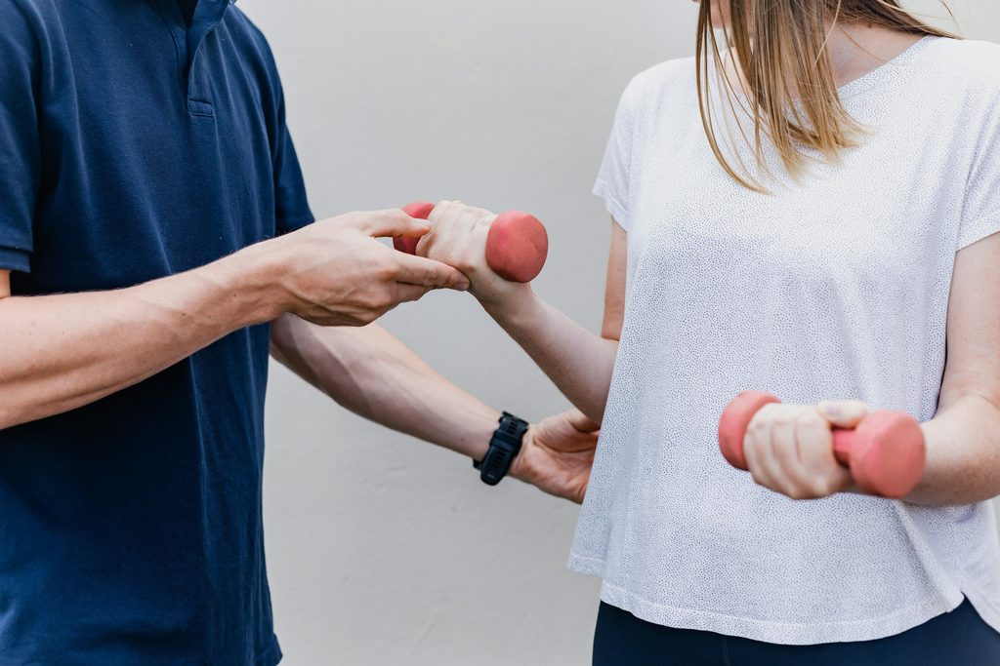
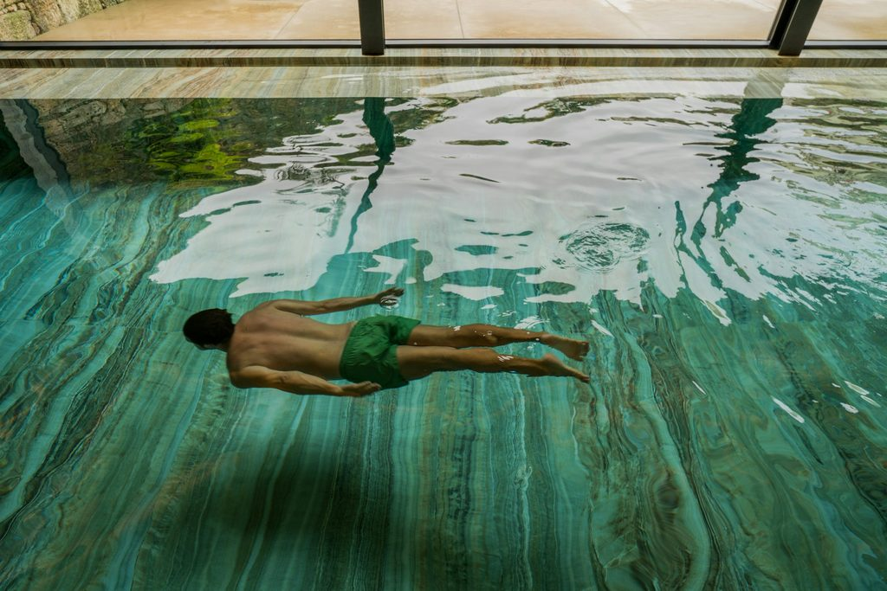

Amraser Straße 3, 1. Stock · im Städtischen Hallenbad Amras, 6020 Innsbruck info@phit.cc
Physiotherapie InnsbruckAmras / Pradl · im Hallenbad Amras
Physiotherapie in Innsbruck. Gründlich untersucht, persönlich begleitet.
Vier spezialisierte Physiotherapeut:innen begleiten dich nach Operationen und Verletzungen, bei Rückenschmerzen, Schwindel, im Sport und bei Beckenbodenbeschwerden – alles in einer Hand, im Städtischen Hallenbad Amras.
Jede Behandlung beginnt mit einer Frage: Woher kommen deine Beschwerden? Wir nehmen deinen Körper genau unter die Lupe, suchen gemeinsam mit dir nach den Ursachen – und erklären dir, was wir finden.
01
Zuhören
Wir sprechen über deine Beschwerden, deine Vorgeschichte und darüber, was du im Alltag oder Sport wieder können möchtest.
02
Untersuchen
Eine genaue Befundung ist die Grundlage jeder Therapie – mit den Methoden, auf die sich unser Team spezialisiert hat.
03
Planen
Daraus entsteht deine Behandlung: manuell, aktiv, im Wasser oder im Trainingsbereich – so, wie es zu dir passt.
Kapitel 03Leistungen
Behandeln.
Alles in einer Hand.
Orthopädisch-traumatologische Physiotherapie, Sportphysiotherapie und Beckenbodentherapie – ergänzt um Training und Therapie im Wasser. Zehn Leistungen, eine Praxis.
Hände & BewegungIm Wasser

TrainingBeckenbodenSchwindel & Rücken
Mobilisierende Physiotherapie
Gezielte Techniken, damit eingeschränkte Gelenke und die Wirbelsäule wieder beweglicher werden.
Heilgymnastik & Heilmassage
Aktive Übungen und klassische Massage – abgestimmt auf deinen Befund und deinen Alltag.
Elektrotherapie
Ergänzende Anwendung mit Reizstrom, etwa zur Unterstützung bei Schmerzen oder zur Muskelaktivierung.
Manuelle Lymphdrainage
Sanfte Grifftechnik, die den Lymphabfluss anregt – zum Beispiel bei Schwellungen nach Operationen.
Unterwassertherapie
Bewegungstherapie im Wasser des Hallenbads Amras: Der Auftrieb entlastet die Gelenke.
Für Frauen und Männer – bei Inkontinenz, rund um Schwangerschaft und Geburt, vor und nach Prostata-OP.
Anna Gassner, MSc
Eigene Seite
Schwindel- & Vestibulartherapie (IVRT®)
Genaue Untersuchung und gezieltes Training bei Schwindel und Gleichgewichtsproblemen.
Simon Braun
Komplexe Rückenschmerzen (CFT)
Cognitive Functional Therapy nach Prof. O’Sullivan: Schmerz, Bewegung und Alltag gemeinsam betrachten.
Simon Braun
SchwerpunktBeckenboden
Beckenbodentherapie in Innsbruck – für Frauen und Männer.
Die Beckenbodenmuskulatur stabilisiert deine Körpermitte und wirkt bei wichtigen Körperfunktionen mit. Beschwerden sind häufig, und du musst sie nicht einfach hinnehmen. Wir sprechen offen, diskret und in Ruhe darüber.
Schwangerschaft & Rückbildung
Inkontinenz
Senkungszustände
Vor & nach Prostata-OP
Schmerzen beim Geschlechtsverkehr
Rektusdiastase
Anna Gassner, MScMasterstudium Beckenbodenphysiotherapie
Im Wasser trägt dich der Auftrieb. Er entlastet deine Gelenke und macht Bewegung leichter. Und das Becken liegt im selben Haus wie unsere Praxis.

Unsere Praxis liegt im 1. Stock des Städtischen Hallenbads Amras. Das macht etwas möglich, das in Innsbruck selten ist: Therapie an Land und im Wasser – unter einem Dach.
Wo
Im Städtischen Hallenbad Amras, direkt im Haus
Wie
Bewegungstherapie mit Auftrieb – gelenkschonend
Wofür
Als Ergänzung zu Behandlung und Training an Land
Kapitel 05Räumlichkeiten
Trainieren.
160 m² für deinen Aufbau.
Medizinische Trainingstherapie unter den Rundbogenfenstern des Hallenbads: therapeutisch begleiteter Kraft- und Koordinationsaufbau – in derselben Praxis, in der du auch behandelt wirst.
Trainingsbereich · 160 m²Der Trainingsbereich von P.H.I.T
320m²
Praxis insgesamt – mit ruhigen Behandlungsräumen, dem Trainingsbereich und dem Hallenbad direkt im Haus.
BehandlungEinzeltherapie in ruhiger, geschützter Atmosphäre.Begleitetes TrainingÜbungen, die auf deinen Befund abgestimmt sind.
Kapitel 06Alltag & Sport
Zurück.
Zurück in den Alltag. Zurück in den Sport.
Nach einer Verletzung oder Operation begleiten wir dich vom ersten Bewegen bis zurück ins Training. Mit genauer Untersuchung, manueller Therapie und gezieltem Aufbau im eigenen Trainingsbereich – Sportphysiotherapie in Innsbruck.
Konservative und post-OP Reha nach Kreuzbandriss
Sehnen-, Kapsel-/Band- und Muskelverletzungen
Return to Sport und Return to Running
Medizinische Trainingstherapie auf 160 m²
Laserbehandlung mit medizinischem Stablaser
Simon Klein & Armin HauserSportphysiotherapie · European Sports Physiotherapy (ESP)
Kapitel 07Team
Menschen.
Vier Spezialist:innen. Ein gemeinsamer Anspruch.
Jede:r von uns hat eigene Schwerpunkte und Zusatzausbildungen. So bekommst du die Therapie von der Person, die sich mit deinem Thema am besten auskennt.
Anna Gassner, MSc
Physiotherapeutin · MSc Beckenbodenphysiotherapie
„Ich begleite dich auf dem Weg, deinen eigenen Körper besser kennenzulernen und zu verstehen. Ich freue mich darauf, dir zu helfen, dein volles Potential auszuschöpfen.“
Schwerpunkte
Beckenbodenphysiotherapie (MSc)
Orthopädische & traumatologische Rehabilitation
Blackroll-Trainerin & Faszienyoga
Therapieklettern
Manuelle Lymphdrainage
Armin Hauser
Physiotherapeut · European Sports Physiotherapy
„Sei die beste Version deiner selbst! Ich unterstütze dich mit all meiner Erfahrung und physiotherapeutischen Möglichkeiten!“
Schwerpunkte
Manuelle Therapie nach Maitland
Fasziendistorsionsmodell (FDM)
PNF
European Sports Physiotherapy (ESP)
Manuelle Lymphdrainage
Simon Klein
Physiotherapeut · Sportphysiotherapie
„Mich begeistert es besonders, deinen Körper genau unter die Lupe zu nehmen. Finden wir gemeinsam die Ursachen für deine Beschwerden und bringen dich zurück in einen beschwerdefreien Alltag oder Sport!“
Schwerpunkte
Sportphysiotherapie
Manuelle Therapie
Medizinische Trainingstherapie
Return to Sport / Running
Konservative & post-OP Reha nach Kreuzbandriss
Sehnen-, Kapsel-/Band- & Muskelverletzungen
Laserbehandlung mit med. Stablaser
Simon Braun
Physiotherapeut · Schwindel & Rücken
„Gezielt behandeln. Ganzheitlich denken. Moderne Physiotherapie mit Erfahrung und Empathie.“
Schwerpunkte
IVRT® Schwindel- & Vestibulartherapie
Komplexe Rückenschmerzen (CFT, Prof. O’Sullivan)
Orthopädische & traumatologische Reha
Masterlehrgang Physiotherapie
Maitland-Zertifikat (IMTA)
Mulligan Concept
FDM
Manuelle Lymphdrainage
Kapitel 08Kosten
Ablauf.
In vier Schritten zur Behandlung.
Wir sind Wahltherapeut:innen. Das heißt: Du bezahlst die Behandlung bei uns und bekommst einen Teil davon von deiner Krankenkasse zurück.
1
Überweisung mitbringen
Lass dir von deiner Ärztin oder deinem Arzt eine Zuweisung zur Physiotherapie ausstellen.
Wir verrechnen Privattarife – es gibt keine Direktverrechnung mit der Kasse.
4
Rückerstattung
Reich die Rechnung bei deiner Krankenkasse ein und erhalte einen Teil der Kosten zurück.
Abrechnung
PrivattarifWahltherapeut:innen – keine Direktverrechnung mit der Krankenkasse.
Tarif pro Einheit
[PLATZHALTER: Tarif pro Therapieeinheit]Die genauen Tarife nennen wir dir gern am Telefon.
Rückerstattung
ca. 55 € pro TherapiestundeAnteilig durch deine Kasse, laut bisherigen Angaben. [BITTE PRÜFEN]
Häufige Fragen
Gut zu wissen vor dem ersten Termin.
Deine Frage ist nicht dabei? Ruf uns an – wir erklären dir alles in Ruhe.
Brauche ich eine ärztliche Überweisung?
Ja, bitte bring eine ärztliche Zuweisung bzw. Überweisung zur Physiotherapie mit. Sie ist auch die Grundlage dafür, dass deine Krankenkasse einen Teil der Kosten rückerstattet.
Was zahlt die Krankenkasse?
Wir sind Wahltherapeut:innen und verrechnen Privattarife – eine Direktverrechnung mit der Kasse gibt es nicht. Du reichst die Rechnung bei deiner Kasse ein und erhältst eine anteilige Rückerstattung, laut bisherigen Angaben ca. 55 € pro Therapiestunde [BITTE PRÜFEN].
Wo parke ich – und wie komme ich mit den Öffis hin?
Hinter dem Gebäude des Hallenbads Amras gibt es gratis Parkplätze. Mit öffentlichen Verkehrsmitteln fährst du bis zur Haltestelle „Leipziger Platz“.
Wie finde ich die Praxis im Hallenbad?
Geh durch den Haupteingang des Hallenbads und dann in den 1. Stock – die Praxis liegt dort links.
Ist Beckenbodentherapie auch etwas für Männer?
Ja. Beckenbodenphysiotherapie ist für jeden Menschen wichtig – bei Männern zum Beispiel vor und nach einer Prostata-Operation (Prostatektomie, Adenomektomie). Mehr dazu auf unserer Seite zur Beckenbodentherapie.
Brauche ich für Beckenbodentherapie eine eigene Überweisung?
Nein, eine normale Überweisung zur Physiotherapie (z. B. PT03, Heilgymnastik) gilt auch für die Beckenbodentherapie. Sie wird wie jede andere Physiotherapie verrechnet.
Kapitel 09Anfahrt & Kontakt
Finden.
Im Hallenbad Amras, 1. Stock links.
Standort & Anfahrt
Adresse
Amraser Straße 3, 1. Stock 6020 Innsbruck – im Städtischen Hallenbad Amras
Bitte keine detaillierten Gesundheitsdaten per Formular – das besprechen wir persönlich.
AbspannFür Physiotherapeut:innen
Physiotherapie-Raum für Selbstständige zu vermieten.
Du bist Physiotherapeut:in und möchtest selbstständig arbeiten – aber nicht allein? Bei uns bekommst du einen eigenen, ausgestatteten Therapieraum in einem interdisziplinären Team.